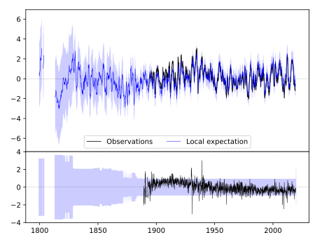
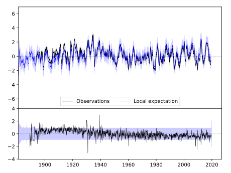
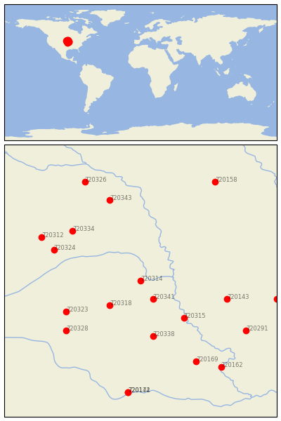

ASHLAND NO 2 [USA]


| Neighbour | Name | Country | Distance | Lon/Lat | Years |
|---|
| 720314 | ASHLAND NO 2 | USA | 0 | -96.4, 41.0 | 1888-2019 |
| 720341 | SYRACUSE | USA | 37 | -96.2, 40.7 | 1871-2019 |
| 720318 | CRETE | USA | 61 | -96.9, 40.6 | 1882-2019 |
| 720315 | AUBURN 5 ESE | USA | 89 | -95.7, 40.4 | 1893-2019 |
| 720338 | PAWNEE CITY | USA | 101 | -96.2, 40.1 | 1882-2019 |
| 720323 | GENEVA | USA | 115 | -97.6, 40.5 | 1886-2019 |
| 720143 | CLARINDA | USA | 122 | -95.0, 40.7 | 1872-2019 |
| 720334 | MADISON | USA | 127 | -97.5, 41.8 | 1893-2019 |
| 720324 | GENOA 2 W | USA | 129 | -97.8, 41.5 | 1875-2019 |
| 720328 | HEBRON | USA | 134 | -97.6, 40.2 | 1886-2019 |
| 720343 | WAKEFIELD | USA | 150 | -96.9, 42.3 | 1893-2019 |
| 720312 | ALBION | USA | 154 | -98.0, 41.7 | 1892-2019 |
| 720169 | HORTON | USA | 163 | -95.5, 39.7 | 1888-2019 |
| 720291 | CONCEPTION | USA | 168 | -94.7, 40.2 | 1888-2019 |
| 720153 | MT AYR | USA | 188 | -94.2, 40.7 | 1892-2019 |
| 720162 | ATCHISON | USA | 190 | -95.1, 39.6 | 1865-2019 |
| 720326 | HARTINGTON | USA | 192 | -97.3, 42.6 | 1891-2019 |
| 720174 | MANHATTAN | USA | 200 | -96.6, 39.2 | 1891-2019 |
| 720142 | MANHATTAN D.Burnette | USA | 200 | -96.6, 39.2 | 1828-2019 |
| 720158 | STORM LAKE 2 E | USA | 203 | -95.2, 42.6 | 1889-2019 |